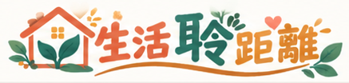

← 回首頁不用背 17 個目標。看看身邊的小事跟哪些目標有關，想想自己會怎麼選，再挑一件做得到的事開始。
先看看 17 個目標在說什麼，再判斷生活情境跟哪些目標有關。答案不只一個，選出你覺得有關的就好。
米色底：和家政課最相關的 6 項，這堂課會常常遇到
這件事和哪些 SDG 有關？可以複選，選好按「看看說明」。
每個選擇都有好處，也有限制。選一個你真的會做的，再看看每個選項背後的代價。
挑一件這星期做得到的小事，寫下計畫，產生你的「永續行動卡」，截圖或列印交給老師。
行動卡下方有 7 天打勾格和心得欄，做完一週再補上。